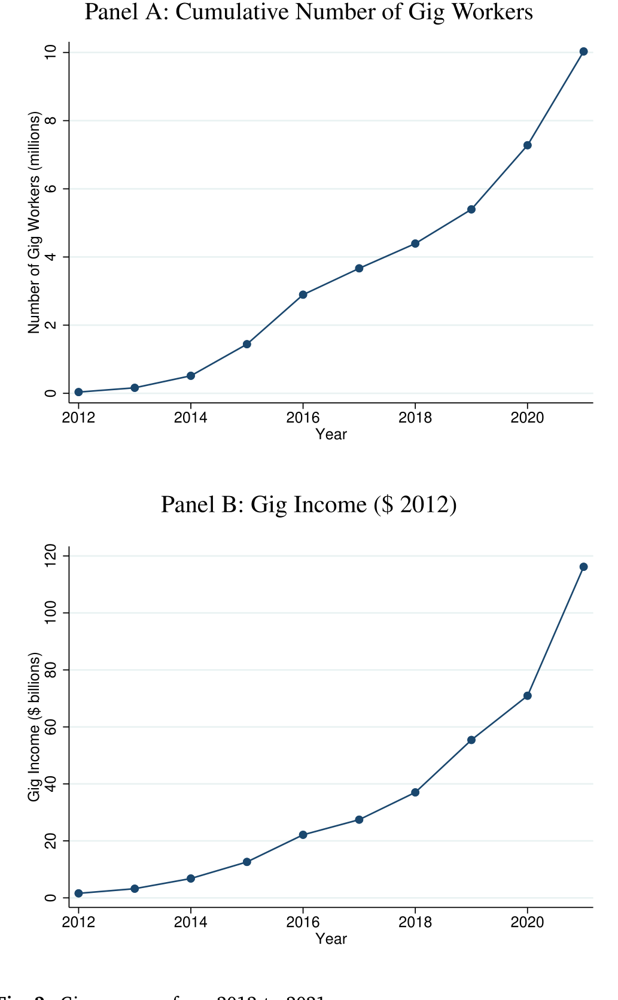
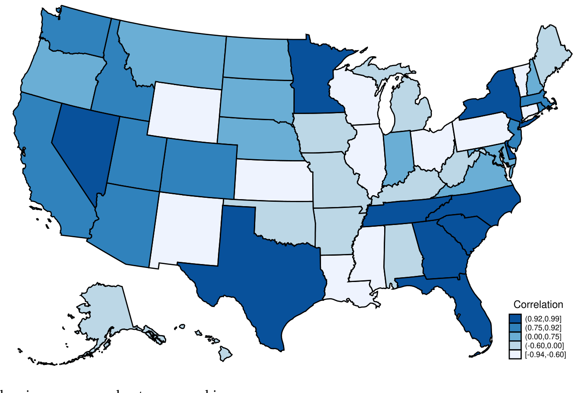
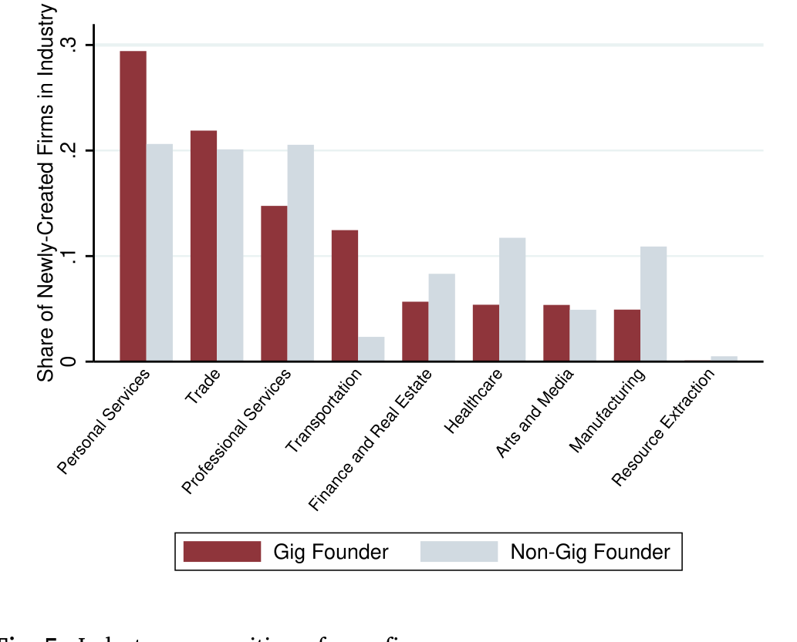
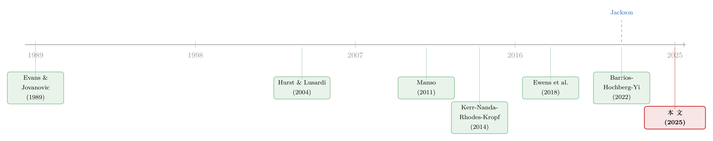

零工经济，是一所创业学校吗？——来自全美报税记录的证据
本文读的是 Denes, Lagaras & Tsoutsoura (2025, Journal of Financial Economics)：他们用美国国税局（IRS）全样本报税记录把「零工工作者」和他们后来创办的公司一一对应起来，发现干过零工的人创业概率高出 1.0 个百分点；这些「零工系」公司开张时更大、却更短命，但只要活下来就更赚钱。一句话——零工经济像一所低成本的创业学校，让人「先试错、再下注」。
1 引言：一份「不体面」的工作，能教会人创业吗？
提起零工经济（gig economy），你脑子里大概会浮现出两幅画面。一幅是热闹的：手机一点，车就来了，房子能短租，闲置的技能能换钱，近十年里有将近 1000 万美国人从中赚到过收入。另一幅却是灰暗的：没有社保、没有劳动保护、收入忽高忽低，一不小心就成了「零工陷阱」里挣扎的人。关于它到底是好是坏的争论，从它诞生那天起就没停过。
但这篇论文想问的，是一个被前两幅画面都遮住了的问题——干零工的这段经历，会不会悄悄改变一个人的人生轨迹，把他推上创业这条路？
这个问题为什么值得认真对待？因为创业从来不是一件轻松的事。它的核心，是「不确定性」三个字。一个想创业的人，要面对一连串他无法预知的东西：我的点子有没有人买单？这个行业到底怎么运转？我能不能扛过开张头几年的现金流低谷？正是这些不确定性，把无数有想法的人挡在了门外。
而零工经济，恰恰可能在这几个地方都松了松绑。首先，它门槛极低、时间灵活，你可以一边打着别的工、一边「兼职」试水某个行业，几乎不用押上身家。接着，一个自然的问题是——这种「试水」会不会本身就是一种学习？一个在网约车平台上跑了两年、对本地交通和客户需求了如指掌的人，再去开一家运输类的小公司，是不是比一个完全的门外汉更有底气？然后，零工收入还能在创业最艰难的时候，充当一笔现金缓冲，帮人「熨平」收入的波动。
于是，作者把一个看似属于劳动经济学的话题，翻译成了一个关于「在岗学习」（on-the-job learning）与「试错」（experimentation）的创业金融问题。这正是本文的核心，也是它一路要讲透的那「一件事」。

Figure 2: Gig economy from 2012 to 2021
2 识别策略：怎么知道是「零工」推人去创业，而不是反过来？
这里立刻冒出一个老问题：干零工的人本来就可能是「闲不住、爱折腾」的那类人——他们创业概率高，会不会只是因为他们天生就是创业的料，跟零工没关系？这就是典型的遗漏变量（omitted variable）担忧。
作者的应对分三层，一层比一层硬。
第一层，是把控制变量堆到极致。最严格的设定里，模型吸收了县×年固定效应（county-year fixed effects），把同一个县、同一年里所有随时间变化的本地经济冲击都「吃掉」；再叠上对个人收入、年龄等特征的精细固定效应。也就是说，他们比较的是同一个县、同一年、收入和年龄都差不多的两个人——一个干过零工、一个没干过——看谁更可能去创业。
但真正关键的一步，是第二层：作者借用了 Jackson (2022) 的思路，利用零工经济在地理上和时间上「错峰可得」（staggered availability）这一外生变化。说白了，网约车、短租这类平台不是一夜之间铺满全美的，而是一个县一个县、一年一年地陆续上线。一个人能不能干零工，很大程度上取决于他所在的县「轮到」平台进入的早晚——这跟他个人是不是天生爱折腾，关系就不大了。用这套设计估出来的效应，和基准结果几乎一模一样：还是 1.0 个百分点。
第三层，是用 Oster (2019) 的方法做了一道「思想实验」：如果那些看不见的遗漏变量，和看得见的控制变量同样重要，系数会偏多少？结果是，经过偏差调整后的系数和基准估计非常接近。系数在各种设定下都稳如磐石，这本身就是「不太可能有某个遗漏变量在背后操盘」的有力旁证。
这套「错峰可得 + Oster 稳健性」的组合，是近年实证公司金融里处理「自选择」的标准打法。它不像断点回归那样有一刀切的干净边界，但胜在样本是全美普查级别、且变化来源讲得清楚。
3 数据：当你能看见每一个人的每一笔零工收入
本文最让人羡慕的，是它的数据。作者拿到的是美国国税局的全样本行政报税记录——不是抽样、不是调查问卷，而是 2012 到 2021 年间，全美所有公司和个人的微观税务信息。
怎么识别一个人干过零工？靠的是平台给 IRS 报送的信息申报表（information returns）：1099-MISC、1099-NEC、1099-K 这三张表，记录了平台付给每个人的收入；再辅以个人报税时填的 Schedule C（附在 Form 1040 里，会写明经营活动的描述，里头常常直接出现零工平台的名字）。作者手工整理出一份 174 家零工平台的名单，分成租赁、销售、服务、运输四类——其中约一半在服务业，近 50 家在运输业。
怎么识别一个人「创业」了？作者用的是最普遍的企业形式——个人独资企业（sole proprietorship），并剔除了那些纯粹因为报税规则而「机械生成」的实体。
样本是全美 25 到 65 岁的个人。规模有多大？图 2 给出了一个直观的picture：受过零工收入的美国人，从样本初期的不到 100 万，一路涨到最后一年的约 1000 万；零工总收入也从不足 100 亿美元飙升到 2021 年的近 1200 亿美元（均换算成 2012 年实际美元）。零工收入本身也不小——区间在 8000 到 20000 美元之间，约四分之一的零工工作者每年挣超过 10000 美元。这已经不是「赚点零花钱」的体量了。
4 主要结果：先看谁去创业，再看他们开的是什么公司
4.1 谁被「推」上了创业路
基准结论前面已经说了：干过零工的人，创业概率高出 1.0 个百分点。这个数字在各种设定下都稳定。更有意思的是，作者把创业者拆成「头一回创业」和「老手」，发现头一回创业的人贡献了大约四分之三的效应。换句话说，零工经济真正撬动的，是那些原本根本没踏进过创业门槛的「新人」。
接着，一个自然的问题是——是哪些人被撬动了？ 作者沿着资本约束、生命周期、灵活性三条线做了异质性分析，画面非常清晰：
- 低收入的人反应更强。无论用调整后总收入（AGI）、用人在本县当年收入分布里的位置、还是用「是否领过劳动所得税抵免（EITC）」来衡量，结论一致——越是手头紧的人，越容易因为零工而去创业。
- 年轻人反应更强。
- 看重灵活性的人反应更强。作者用「有抚养对象的人」以及「带孩子的单身报税者」来代理这群人，发现他们一旦干零工，创业概率显著上升。

Figure 4: Relationship between the gig economy and entrepreneurship
4.2 真正关键的一步：他们开的，是「似曾相识」的公司
如果零工只是给了人一笔钱、一点闲，那它的作用顶多是「松绑」。但本文最漂亮的发现，是零工经济还塞给了人一套行业知识。
作者算了一笔账：把零工工作者按他们当初赚钱的平台类型分组，再看他们后来在哪个行业创业。结果是——零工创业者往往「转行不转赛道」，从某类零工平台出来的人，更可能在相似的行业里开公司。跑运输的去开运输类小企业，做服务的去开服务类小企业。更一般地，用全样本的薪资雇员和独立承包人的就业记录看，创业者显著更可能在自己有过工作经验的行业里创业，而零工经历的这种「行业黏性」尤其突出。
这就把「学习」这个机制从猜测变成了证据：零工不只是收入来源，它是一段带着行业 know-how 的预演。

Figure 5: Industry composition of new firms
4.3 于是反转出现：更短命，却更赚钱
现在到了全文最精彩的反转。如果你以为「零工系」公司因为创始人有经验、所以会活得更稳、更久——那就猜反了。
作者追踪了这些公司开张后一到三年的命运，发现：
- 零工系公司在founding时更大——无论是营收还是雇员人数，都显著高于非零工创业者开的公司（控制了县×年和行业固定效应）。
- 但它们的存活率反而低
2.6到3.2个百分点，相对于样本均值是3.7%到7.1%的下降。 - 可一旦活下来，盈利能力高出
39.4%到46.9%；而且更可能雇人、更可能雇到五个人以上的「规模化」团队。
更大、更短命、但活下来更赚钱——这三件事放在一起，恰恰是「试错」的标准签名。一个掌握了行业知识、又有零工收入兜底的人，敢下更大的注、赌更激进的点子；这些点子风险高，所以失败得快；但学习也快——发现不行就早早关停，发现行就做大。短命，从这个角度看不是失败，而是「快速学到自己公司前景」的副产品。
作者还顺着这条线往下挖了两层。其一是用工与资本结构：零工系公司在「是否雇用独立承包人」这个外延边际上，比非零工公司高出 9.5% 到 18.2%（相对均值），雇用人数的内涵边际上也明显更多——这进一步说明零工工作者把在平台上学到的「怎么用人、怎么协作」的经验，搬进了自己的公司。其二是融资：零工系公司「有负债」的概率显著更高，相对均值高出 10.2% 到 17.9%。这暗示零工经济可能帮那些原本受资本约束的人，敲开了信贷市场的门。
最后，作者还回答了一个「值不值」的问题：当过零工的创始人，创业之后的个人收入更高，在收入分布里的排名也更可能上升。也就是说，这条「零工→创业」的路，平均而言确实让人过得更好了。
5 文献脉络：从「创业是不是试错」到「零工是不是预演」
这篇论文站在两条研究脉络的交汇点上。
第一条，是关于创业到底由什么驱动的老问题。早期文献盯着「钱」——Evans & Jovanovic (1989)、Hurst & Lusardi (2004) 反复论证流动性约束如何卡住新公司的诞生；后来 Herkenhoff, Phillips & Cohen-Cole (2021) 用和本文类似的数据，发现信用额度和信用分一高，创业就增加。但「钱」之外，还有人提出了一个更深的视角：创业的本质是试错。Manso (2011) 和 Kerr, Nanda & Rhodes-Kropf (2014) 把创业刻画成一场「容忍早期失败、奖励长期成功」的实验；Ewens, Nanda & Rhodes-Kropf (2018) 则证明，试错成本一降，创新就涌现。本文的「更短命却更赚钱」，正是给这套「试错论」补上的一块全样本微观证据。
第二条，是新近兴起的零工经济与创业的小文献。最直接的两位前辈是 Barrios, Hochberg & Yi (2022)——他们发现网约车上线后，新企业注册和「怎么创业」的网络搜索都增加了；以及 Mao et al. (2023)——短租平台的进入同样带动了新公司创立。本文与它们一脉相承，却在三件事上往前推了一大步：其一，用 IRS 的个人级税务数据，第一次把「赚零工收入的人」和「他创办的公司」直接连了起来，而不是停在县级的总量相关；其二，正因为连上了，才能讲清「学习/试错」的机制；其三，样本覆盖了全美所有零工平台和所有公司，而非单一行业。

顺带一提，本文作者之一 Denes 早前还有一篇 Denes et al. (2023)，研究投资者税收抵免对创业的影响，结论是政府项目常常事与愿违——这也提醒我们，「补贴创业」和「让人在零工里自己学会创业」，可能是两条效果迥异的路。
6 评论与延伸（Q&A + 研究方向）
(a) 几个可能的疑问
Q：用「个人独资企业」来代表创业，会不会把一堆『副业』也算进去了？
这确实是个真实的张力。Sole proprietorship 门槛低、数量大，里头难免混入大量小规模副业。但作者剔除了因报税规则「机械生成」的实体，并且关键证据来自后续——这些公司不少最后雇了五人以上、还借了债，说明至少相当一部分是「动真格」的创业，而非纯挂名。
Q：「错峰可得」真的外生吗？平台会不会专挑创业氛围好的县先进入？
这是 Jackson (2022) 这套方法最需要被拷问的地方。如果平台选择性地先进入「创业土壤肥沃」的县，外生性就打折。作者的防线是 Oster (2019) 检验——偏差调整后系数几乎不动，说明可观测与不可观测的选择都不足以解释这
1.0个百分点。但这终究是间接论证，不如一个真正的随机推广来得干净。
Q：「更短命却更赚钱」一定是『试错』吗？会不会只是幸存者偏差？
盈利能力是「条件于存活」算出来的，所以确实带着幸存者偏差的味道。但作者的解释更完整：更大的初始规模 + 更低的存活率 + 更高的条件盈利，三者一起才构成「试错」的签名。单看任何一个都不够，是这个组合让「下大注、快速筛选」的故事比「单纯幸存者偏差」更可信。
Q：低收入的人反应更强，到底是『缺钱』还是『缺机会』？
作者用了 AGI、县内收入排名、EITC 三种口径，都指向低收入群体。这更像是资本约束在松绑——零工收入既是一笔启动资金，也是一层收入缓冲。再加上「有负债概率上升」的发现，融资渠道被打开这条线索是比较扎实的。
Q：这是因果，还是『爱折腾的人既爱零工也爱创业』？
这正是全文识别的靶心。固定效应把同县同年同收入同年龄的人放在一起比，错峰可得提供外生变化，Oster 检验排查遗漏变量——三道防线叠起来，作者有理由把它读作因果。但读者心里可以保留一分：行政数据看不见「人格特质」这类最难控的东西。
Q：结论能外推到经济衰退期吗？
样本 2012–2021 大体是零工经济的扩张期。Jackson (2022)、Fos et al. (2025) 提示零工常被失业者当作缓冲。衰退时，「被迫干零工」的人画像可能和扩张期的「主动尝鲜」者很不一样，外推需谨慎。
(b) 几个可能的研究问题与提案
1. 零工创业者的「债」，是谁借给他们的？ - 【经济故事】本文发现零工系公司更可能有负债，但「有息」只是个粗指标。这笔钱到底来自银行、信用卡、还是金融科技平台？如果零工收入流被当成了一种新的「可验证现金流」抵押品，那它就在重写小微信贷的风控逻辑。 - 【可行性】中。需要把税务记录里的利息支出，和信贷登记或金融科技放贷数据匹配，识别上可沿用本文的错峰设计。难点在于拿到贷款方层面的数据。
2. 外资/机构持有的「零工平台」，会不会改变它对本地创业的外溢？ - 【经济故事】不同平台的所有权结构（VC 支持、上市、外资控股）可能影响它在一个地区的扩张节奏和定价，进而改变对本地创业的「学习外溢」。这把劳动金融和所有权结构接了起来。 - 【可行性】中偏低。需要平台层面的所有权数据，而本文恰恰因保密无法识别具体平台——这是最大的障碍。
3. 零工系小公司的失败，会不会通过供应链/信贷传染给上下游？ - 【经济故事】既然这些公司更短命、更爱借债、更爱用独立承包人，它们密集倒闭时，会不会在本地信用市场和承包人收入上掀起涟漪？这关乎零工经济的「系统性」成本。 - 【可行性】中。税务数据能看到承包人收入和企业关停，可构建县×行业层面的「零工系公司密度」，识别其倒闭潮的本地溢出。
4. 把「试错」做成一个可检验的结构参数。 - 【经济故事】本文给了「试错」一个漂亮的实证签名，但没把它写成模型参数。若能在一个带学习的创业期权模型里，把「零工预演」刻画为降低先验不确定性的信号精度，就能定量回答「零工让试错成本降了多少」。 - 【可行性】中。需要结构估计，数据上本文样本足够，挑战在模型设定与识别。
5. 零工经历对「创业失败后再就业」的影响。 - 【经济故事】创业失败常被污名化。但如果零工经历让人「失败得更体面」——失败后能迅速回到零工或薪资市场——那它降低的就不只是创业的进入成本，还有退出成本。 - 【可行性】高。本文的税务数据天然能追踪个人在创业关停后的后续收入路径，直接接着 §4.3 往下做即可。
7 我的判断
这篇文章的贡献，我认为主要在「数据 × 机制」这两个字上。把全美所有零工工作者和他们创办的公司一一对应起来，这件事此前没人做到过；而正因为对应上了，作者才得以把「零工→创业」从一个县级总量相关，推进到一个有血有肉的「在岗学习 + 试错」的微观故事。「转行不转赛道」「更大更短命却更赚钱」这两组发现，单拎出来都漂亮，合在一起更是把「试错」这个抽象概念落到了实处。
对识别，我仍保留两点担忧。其一，错峰可得的外生性终究依赖「平台进入与本地创业潜力无关」这个无法直接检验的假设，Oster 检验是有力的旁证但不是证明。其二，用 sole proprietorship 度量创业，天然会把大量副业噪声卷进来，虽然下游的「雇五人、借债」等结果缓解了这一担忧，但「创业」这个概念的边界仍是模糊的。
后续我最想看到的，是两件事：一是把这套数据用到衰退期，看看「被迫零工」与「主动零工」画出的创业图景有何不同；二是顺着「有负债概率上升」这条线，把零工创业者的融资渠道彻底解剖开——这或许会告诉我们，零工经济正在以一种我们尚未充分意识到的方式，重塑小微信贷市场的底层逻辑。
参考文献
- Barrios, J. M., Hochberg, Y. V., & Yi, H. (2022). Launching with a Parachute: The Gig Economy and New Business Formation. Journal of Financial Economics 144(1), 22–43.
- Denes, M., Lagaras, S., & Tsoutsoura, M. (2025). Entrepreneurship and the Gig Economy: Evidence from U.S. Tax Returns. Journal of Financial Economics 173, 104156.
- Denes, M., Howell, S. T., Mezzanotti, F., Wang, X., & Xu, T. (2023). Investor Tax Credits and Entrepreneurship: Evidence from U.S. States. Journal of Finance 78(5), 2621–2671.
- Evans, D. S., & Jovanovic, B. (1989). An Estimated Model of Entrepreneurial Choice under Liquidity Constraints. Journal of Political Economy 97(4), 808–827.
- Ewens, M., Nanda, R., & Rhodes-Kropf, M. (2018). Cost of Experimentation and the Evolution of Venture Capital. Journal of Financial Economics 128(3), 422–442.
- Fos, V., Hamdi, N., Kalda, A., & Nickerson, J. (2025). Gig-Labor: Trading Safety Nets for Steering Wheels. Journal of Financial Economics 163(1), 103956.
- Herkenhoff, K., Phillips, G. M., & Cohen-Cole, E. (2021). The Impact of Consumer Credit Access on Self-Employment and Entrepreneurship. Journal of Financial Economics 141(1), 345–371.
- Hurst, E., & Lusardi, A. (2004). Liquidity Constraints, Household Wealth, and Entrepreneurship. Journal of Political Economy 112(2), 319–347.
- Jackson, E. (2022). Availability of the Gig Economy and Long Run Labor Supply Effects for the Unemployed. Working Paper.
- Kerr, W. R., Nanda, R., & Rhodes-Kropf, M. (2014). Entrepreneurship as Experimentation. Journal of Economic Perspectives 28(3), 25–48.
- Manso, G. (2011). Motivating Innovation. Journal of Finance 66(5), 1823–1860.
- Oster, E. (2019). Unobservable Selection and Coefficient Stability: Theory and Evidence. Journal of Business & Economic Statistics 37(2), 187–204.